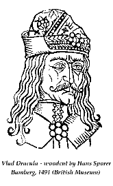

- turks -
|
. Biographies Prince Eugene 1663 - 1736 German General Prince Eugene was born in Paris. He was refused a commission by Louis XIV of France, and entered the service of the Emperor Leopold against the Turks. Made field marshal in 1693, Prince Eugene was the commander and diplomat who led the military campaigns that laid the foundations of Habsburg power in central Europe. He fought the Turks at Vienna, and helped to establish the Austrian-Hungarian empire. |
 |
He worked as a mathematics teacher at a primary school in the Haitian capital, until losing his job, due to cuts in the education budget in 1980. Returning from Croix-des-Bouguets in 1982, Schiller worked on his own in Port-au-Prince exhibiting his work in galleries and stores. Schiller first came to the Turks and Caicos Islands in 1992, trying (like so many of his compatriots) to get away from the political and economic turmoil in his native Haiti. It was then that he made his first contacts with the Bamboo Gallery. He finally moved to the Turks and Caicos Islands permanently in early 1995. |
|
He briefly regained the throne in 1475 after years of "imprisonment" in Hungary, but finally met his end in 1476 by an assassin's hand. . The Turks were defeated and in their retreat Dracul was swept from the throne. He regained it in 1443 with the help of the Turks, with whom he had signed a new alliance. The sultan doubted Dracul's loyalty, though, and demanded he leave two of his sons, Vlad and Radu in the sultan's court. |
The frigate Crimea sank with all aboard, and the 66-gun Maria Magdalena drifted into the Bosporus, where she became easy prey for enemy ships. " Due only to the courage and skill of the crew, the surviving vessels were able to return to Sevastopol. While the Russians were struggling with the elements, the Turks concentrated 42 vessels in the Dnieper Firth, where the army of Potemkin was on the offensive. The only sea-borne opposition to the enemy was the Liman flotilla of Rear Admiral Nikolay Mordvinov. However, Mordvinov was not quick enough to attack the Turkish fleet, and the enemy had sufficient time to move 5,000 troops onto the Kinburn spit.
|  |
A site I really like: http://www.arad-romania.com/